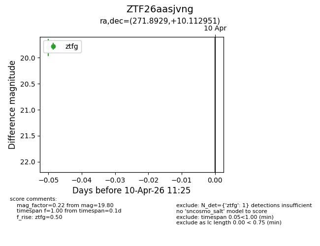
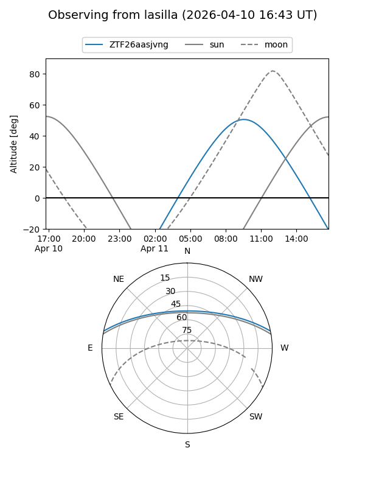
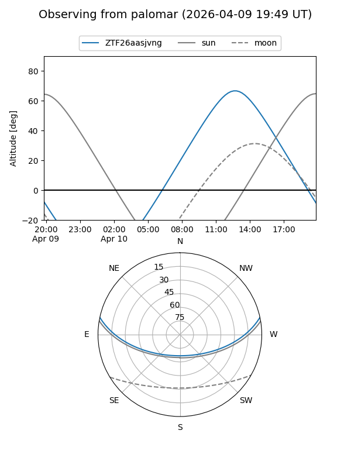

ZTF26aasjvng
Target ZTF26aasjvng at 2026-04-10 11:34
Aliases and brokers:
FINK: link
Lasair: link
ALeRCE: link
alt names
ZTF26aasjvng (ztf,fink_ztf)
Coordinates:
equatorial (ra, dec) = 271.8929,+10.11295
equatorial (HMS+DMS) = 18:07:34.30,+10:06:46.62
galactic (l, b) = (37.1261,+14.28489)
Flags:
Photometry:
last ztfg=19.80
1 ztfg detections
Lightcurve

Visibility


Additional plots